01 Ouch!
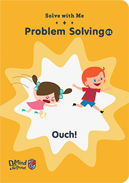
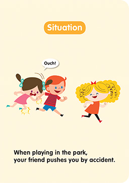

孩子们精力无限，爱跑跑跳跳，碰撞在所难免。发生意外受伤时，孩子又不懂控制自己情绪及做出反应，或会哇哇大哭、或怪责别人，朋友之间的冲突往往由此发生。这个故事循序渐进地引导小朋友如何抒发情绪及解决问题。


01 Ouch!
孩子们精力无限，爱跑跑跳跳，碰撞在所难免。发生意外受伤时，孩子又不懂控制自己情绪及做出反应，或会哇哇大哭、或怪责别人，朋友之间的冲突往往由此发生。这个故事循序渐进地引导小朋友如何抒发情绪及解决问题。
02 Where are you, Mum?
充满好奇心的孩子喜欢到处探索，但是，又未能充分了解自己的能力去知道有些事情没能力独立处理。有时候，无论父母怎样提醒，他们总喜欢独断独行。这个故事讲述小男孩迷路，正好用来教导孩子外出时要紧随父母，以及面对问题时如何冷静处理。
03 Nosebleeds at school
看到孩子流鼻血，父母自然十分紧张。其实，大多数孩子流鼻血都是和不适当的抠鼻孔，或是鼻黏膜较薄有关。这时候父母应该保持镇静，正确地替孩子止鼻血。孩子感受到父母爱护的同时，亦会学习到父母解决问题的方法和态度。
04 Uh-oh, I dropped my lollipop!
除了玩具外，孩子最钟爱的便是糖果。他们可以为了丢掉一颗糖果在地上，与父母闹上大半天。父母可能会搞不清楚为何糖果有这么大的威力。但不管孩子有理无理，重要的是让孩子明白爸妈理解他们失去糖果的感受，然后引导他们怎样处理当下的情绪。
05 Late for school
对于时间观念重的孩子，上学迟到就像天塌下来一样严重。他们担心被同学取笑、被老师责骂，因而觉得羞愧。这时候，父母在纾缓他们情绪的同时，也要为他们找出解决问题的方法，引导他们减低焦虑，这是我们身为父母要学习的一课。
06 I forgot my art supplies!
孩子开始上幼儿园时，老师偶尔会刻意不通知家长，仅口头吩咐孩子翌日带一些用品回校，目的是考验小朋友的责任感和记忆力。但我们明白，孩子年纪尚小，不可能把每天三小时的课堂内容统统记在脑子里。当他们发现遗忘了重要的事情时，便会生气或抱怨。这时候，家长要让孩子知道解决当下的问题才是首要任务。
07 Ouch! I've hurt myself!
有时候，孩子玩玩具时会一时得意忘形而把自己弄伤。因为感到痛楚，他们可能迁怒于玩具而做出发泄。这时候，家长除了关心孩子的伤势，更应该把握时机教导他们游戏时要注意的安全。
08 I don't have enough snacks to share!
 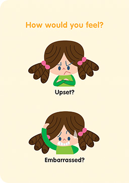
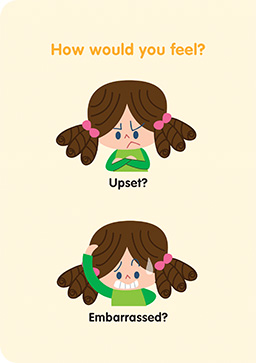
乐于“分享”是一种美德，但孩子有时不懂得怎样与一大帮朋友分享。当他们未能一一答应其他小朋友的要求时，便会感到无助和不快。父母可借此故事让孩子理解分享的乐趣和秘诀。
09 Spending your pocket money
理财对孩子来说是一门很抽象的学问，他们对“价值”这个概念十分模糊。父母可以借着这个小故事教导孩子如何适当地分配零用钱，以及学习理财的第一步。同时也让孩子知道爸妈工作辛苦，挣钱非常不容易！
10 My shoe is broken!
 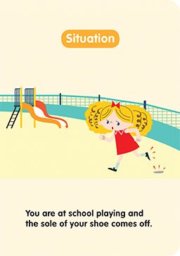
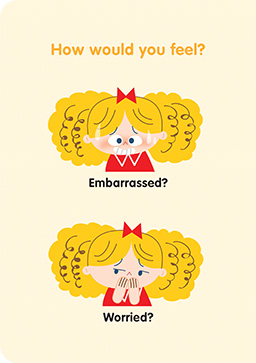
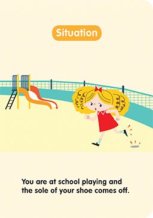
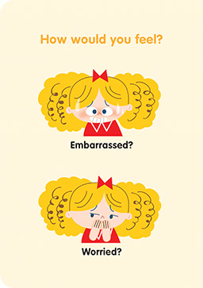
令人尴尬的事情在成人世界常有发生，但有时候也会发生在小朋友身上。一旦出现了，生活经验尚浅的小朋友可能因为不懂得如何处理而感到彷徨。这个故事设计了一个小小的情境，给小读者一个思考空间，借此学习怎样处理突如其来的事情。
11 There's a caterpillar on me!
昆虫并不可怕，当然，对某些孩子来说谈不上可爱。要是孩子本身害怕小昆虫，那一条落在身上或手上的毛毛虫真的会把他吓得半死。如何能够保持镇定，向别人求救呢？那真的不容易啊！这个故事提供了小点子，让孩子学习怎样克服恐惧。
12 My shirt is dirty!
人本身天生爱美。孩子高高兴兴地穿上漂亮的衣服，可是被别人弄脏了，他们可能因而感到不开心，甚至愤怒。父母可能认为只是一件衣服而已，没什么大不了。但对孩子而言，那可是一件严重的事情。本书的一个简单故事教会孩子如何好好地处理自己的情绪。
13 Careless friends
 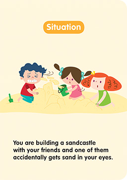
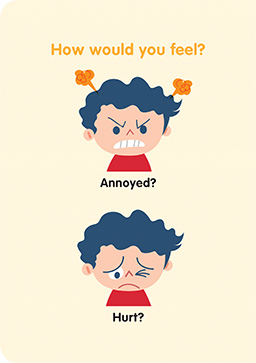
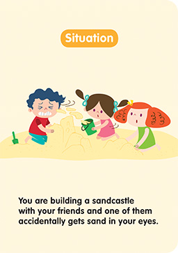
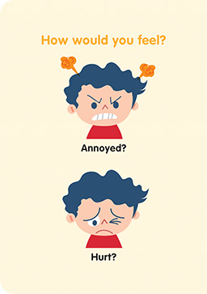
要学会顾己及人，对孩子来说是一门很深的学问，尤其是当他们玩得兴高采烈时。这个故事描述几个孩子到海滩堆沙堡，但是，一个朋友一不小心把沙粒弄到小男孩眼睛里。这时候，眼睛非常难受的小男孩应该怎样做呢？
14 I'm too hot!
孩子们喜欢跑跑跳跳，尽管在家里也会弄得满头大汗。小朋友都不喜欢流汗那种黏黏的感觉，于是常常要求开空调。但是，作为父母的我们，又会因为怕他们着凉而拒绝。遇到这情况，正是一个好时机向孩子解释环保的重要性，并一起商量有没有其他方法代替空调。
15 Taking turns at the playground
孩子天生爱玩，可是很多群体游戏需要等待，孩子可没这种耐性。耐性是需要学习的，更需要从小培养。排队轮候只是一个小例子，日常生活中可以教导孩子练习耐性的机会多的是！我们都知道，处事冷静的孩子比冲动的孩子收获更多，机会也更多！
01 Ouch! I've hurt myself!
孩子天生好胜，无论玩什么游戏都渴望赢。但是，无人能百分百地场场胜利，孩子迟早会尝试到失败的滋味。为了帮助孩子建立“胜不骄、败不馁”的精神，要让他们明白胜负常有，并且要懂得欣赏胜出的朋友。
02 You broke my crayon!
除了玩具，能令小朋友爱不释手的便是文具。愿意跟别人分享自己文具的都是乖宝宝。不过，借出的文具一旦被弄坏，乖宝宝也可能会发脾气。发脾气当然不能解决问题，那么，父母可以怎样做呢？父母可通过这个故事教导孩子怎样平复愤怒的情绪，以及和朋友和好。
03 Hey, that's my cupcake!
重视家庭教育的父母经常教导宝宝对人要有礼貌，不可贪心。但是，宝宝有时遇上蛮不讲理的孩子，心里可能会质疑为什么有些小朋友的行为与自己不一样？当宝宝提出质疑，父母可能感到无奈，因为别人的孩子自己管不到。既然是这样，就让宝宝明白自己要先做好本份，就像书中主角那样，遇到不愉快事情，首先要冷静地把感受告诉对方，然后再解决问题。
04 We forgot Teddy!
很多孩子在成长期间对一些物品有依恋，尤其是陪伴着成长的玩具、布娃娃或是手绢、毛巾。孩子视之为玩伴，并能够给予他们安全感。所以，无论他们去到哪里，都喜欢带在身边。若是遗失了或忘记带着外出，父母应该怎么办呢？本书会给你们一些小点子。
05 I want to go too!
孩子出生后，尤其是头两三年，小宝宝无时无刻都有父母陪伴。因此，在宝宝心中永远是三人世界。对宝宝来说，与父母分离是天大的事情！不过总有一天，宝宝要面对和学习与父母短暂分开。因此，父母必须要教导宝宝学习独处，还要使他们明白，父母的短暂离开并不代表不爱他们。父母回家后，如孩子还未入睡，别忘记给他一个亲吻和拥抱。
06 Rain, rain, go away

一早计划好的行程却因天雨被迫取消，确实令人扫兴。这时候，家长的反应往往直接影响孩子，父母正好趁此机会告诉孩子︰“无论天气怎样，爸妈总在你身边。天气虽然变坏，但我们也可以有不同的精彩节目啊！”乐观的父母才可以培养有正向思维的孩子。
07 Sharing is caring
现今大多数的孩子可谓是幸福的一代，得到大人无微不至的照顾，物质又从不缺乏，几乎垂手可得。但太多的物质享受可能会使他们不懂珍惜，随意浪费。要使他们明白无私的分享和奉献，也是我们作为新一代父母的任务。
08 My beautiful painting
小朋友说话坦率、直接、没有心机。但有时不知不觉间伤害了别人，自己也懵然不知。当我们教导孩子不要取笑别人时，同样要教导孩子听到一些使自己感到难过的话时，应该如何处理自己的情绪。
09 Be quiet!
孩子喜欢发表意见，跟人分享生活趣事，本来是值得鼓励的事情。但年纪尚小的孩子未能明白说话时如何尊重自己，尊重别人，同时也不懂得考虑场合和环境。作为家长的我们，便要向他们解释：“在不适当的时间、地方发言会令别人不开心啊！”
10 Stinky time
放屁虽然是正常不过的行为，但在社交场合，放屁太多似乎也是一件令人尴尬的事情。爸妈可以藉着书中小主角的故事与孩子讨论，如果相同的事情发生在自己身上时，应该怎样处理，并让他们知道放屁是生理现象，不需要怪责自己。
11 Shall we be friends?
大多数孩子性格热情、主动，但也有些孩子比较慢热。因此，热情的宝宝主动认识新朋友时可能会碰上钉子，被拒的他可能觉得受到伤害，心情坏透。这时，父母要让他们明白，与不同性格的小朋友交往时，也要用不同的方法。
12 Lucky you!
在大抽奖环节落空了，未免令人失望。年纪小小的孩子，脸上更难掩失望之情。这时候，要他们落落大方地去恭贺大奖在手的朋友，可能有点儿难。但作为父母的我们，便要把握这种时刻去教导他们，疏导他们失望甚至嫉妒的情绪。
13 Time's up!

当孩子兴致勃勃的那一刻被叫停，难免有点儿扫兴，甚至产生负面的情绪。所以，在孩子进行活动前，可以与他约法三章，制定规矩、时间。最重要的是他们要明白，如果破坏了规矩、不守承诺，便要承担后果。
14 Pay attention to me!
父母带孩子外出应酬时，有时与别人畅谈得兴致高昂，可能会忽略了孩子。孩子不明白成人谈话内容，又未能参与其中，未免感到沉闷，亦会有被忽略的感觉。如果聚会时间不算太长，图书可能是孩子最好的解闷方法。
15 Is it dinner time yet?
肚子不会骗人，肚饿的感觉叫人难以忍受。这个故事的女主角饿得肚子咕咕作响，但妈妈说仍要等待客人，怎么办？小女孩的情况可有千千万万个方法解决。爸妈可把握说故事的机会，教导孩子一个信念︰方法永远比问题多！